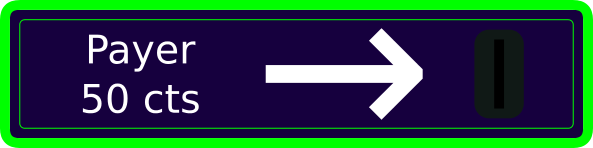
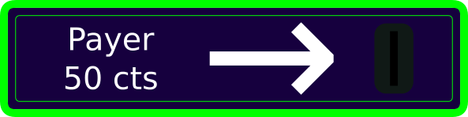
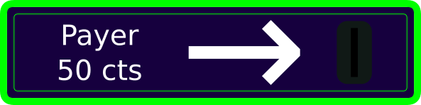

Ce jeu a été réalisé après l'analyse de sa version jouable sur IGN sans pour autant reprendre chaque élément tel qu'il est. Tout cela s'inscrit dans le cadre du Cursus Master en Ingénierie Informatique de l'Université de Franche-Comté à Besançon, campus Sciences et Techniques. Les auteurs sont Alexis Cabodi et Théo Mottet. Vous trouverez sur ce dépôt GitHub le code source et les ressources ainsi que le suivi du développement.

À l'instar de beaucoup de jeux d'arcades, votre but sera ici de détruire les ennemis qui vous font face. Le plus important, et celui qu'il faut battre entièrement pour passer le niveau est le centipède. Cet insecte allant de gauche à droite va se rapprocher de vous à chaque obstacle qu'il rencontre sur son chemin. Vous êtes équipé d'une arme permettant de tout détruire à l'aide d'un projectile. Mais puisque cette arme utilise la technologie de Puissance Rémanente Temporelle, un seul projectile ne peut exister à la fois, avant que l'énergie ne revienne pour un nouveau tir. Or, ces tirs ont une vitesse de déplacement relativement faible et il sera très difficile de détruire ce qui se trouve au loin. Autre inconvénient, l'arme n'est capable de détruire qu'une seule partie du corps du centipède, qui laissera place à un champignon. Par conséquent, jusqu'à 2 nouveaux centipèdes plus petits évoluant séparément peuvent résulter de l'attaque. Veillez donc bien à viser leur tête pour éviter leur prolifération. Faites également attention à l'araignée qui viendra vous embêter et manger des champignons. Faites attention ! Vous ne commencez qu'avec deux vies mais vous pouvez en gagner tous les 10 000 points ! Allez-y, jouez ! et que la chance soit avec vous ! :D
Utilisez les flèches haut, bas, gauche et droite de votre clavier pour déplacer le personnage dans sa zone de jeu. Utilisez la barre espace pour lancer le projectile. Vous pouvez aussi utiliser les touches du clavier : Z, Q, S, D pour vous déplacer.
Lancez une partie en cliquant sur l'image vous demandant d'insérer 50 centimes. La micro-transaction sera effectuée instantanément via internet+ ou, si vous n'avez pas cette fonctionnalité de disponible, depuis votre compte bancaire.
GOOD LUCK :D